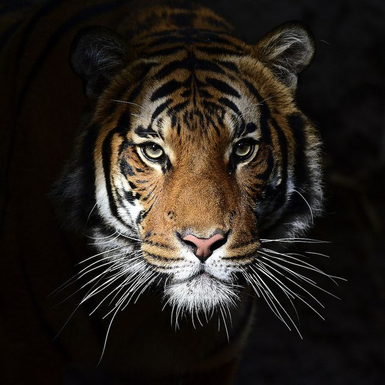

"The lion (Panthera leo) is one of the big cats in the Felidae family and a member of genus Panthera. It has been listed as Vulnerable on the IUCN Red List since 1996, as populations in African range countries declined by about 43% since the early 1990s. Lion populations are untenable outside designated protected areas. Although the cause of the decline is not fully understood, habitat loss and conflicts with humans are the greatest causes of concern.[2] The West African lion population is listed as Critically Endangered since 2016. The only lion population in Asia survives in and around India's Gir Forest National Park and is listed as Endangered since 1986.
The commonly used term African lion collectively denotes lion populations in Africa. It is the second-largest living cat after the tiger, with some males exceeding 250 kg (550 lb) in weight,[6] barring hybrids like the liger.[7][8] In ancient times, the modern lion's range was in most of Africa, including North Africa, and across Eurasia from Greece and southeastern Europe to India. In the late Pleistocene, the lion was the most widespread large land mammal after humans; Panthera leo spelaea lived in northern and western Europe, and Panthera leo atrox in the Americas from the Yukon River to Peru.
In the wilderness, males seldom live longer than 10 to 14 years, as injuries sustained from continual fighting with rival males greatly reduce their life span.In captivity they can live more than 20 years. They typically inhabit savanna and grassland, although they may take to bush and forest. Lions are unusually social compared to other cats. A pride of lions consists of related females and offspring and a small number of adult males. Groups of female lions typically hunt together, preying mostly on large ungulates. Lions are apex and keystone predators, although they are also expert scavengers obtaining over 50 percent of their food by scavenging as opportunity allows. While lions do not typically hunt humans, some have. Sleeping mainly during the day, lions are active primarily at night (nocturnal), although sometimes at twilight (crepuscular).
Highly distinctive, male lions are easily recognized by their manes, and the male's face is one of the most widely recognised animal symbols in human culture. Depictions have existed from the Upper Paleolithic period, with carvings and paintings from the Lascaux and Chauvet Caves in France dated to 17,000 years ago, through virtually all ancient and medieval cultures where they once occurred. It has been extensively depicted in sculptures, in paintings, on national flags, and in contemporary films and literature. Lions have been kept in menageries since the time of the Roman Empire, and have been a key species sought for exhibition in zoos over the world since the late eighteenth century. Zoos are cooperating worldwide in breeding programs for the endangered Asiatic lions".
